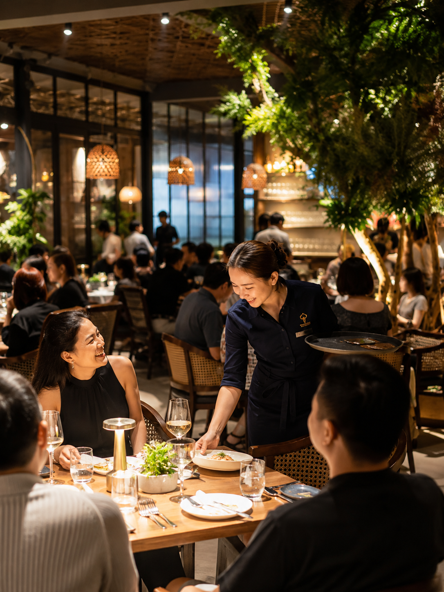
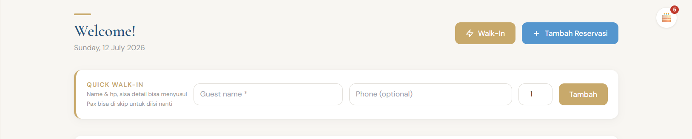
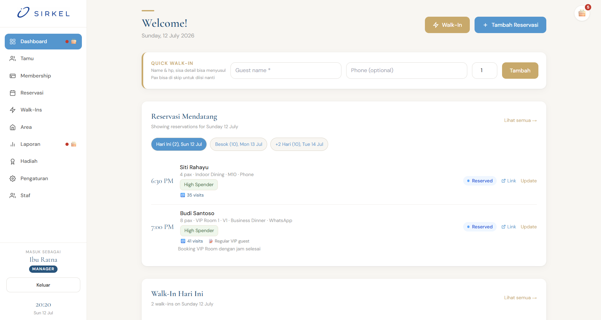
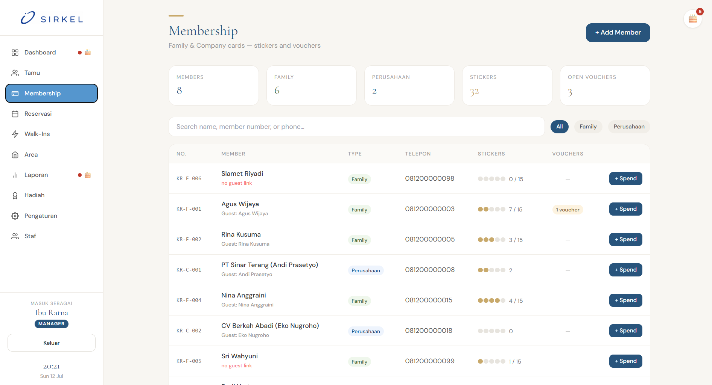

Ciptakan pengalaman yang lebih personal. SIRKEL menyatukan data reservasi, walk-in, dan member dalam satu dashboard, sehingga Anda selalu mengenali pelanggan, preferensi, dan riwayat kunjungannya.
Kedengaran Familiar?
Kalau salah satu dari ini kejadian di restoran Anda minggu ini, Anda nggak sendirian.

Tamu walk-in numpuk di depan host, dicatat manual di kertas, staf kewalahan pas weekend ramai.
Data reservasi tersebar, sebagian di WhatsApp, sebagian di buku, sebagian cuma di ingatan staf shift pagi.
Tamu setia diperlakukan seperti orang baru, nggak ada catatan siapa yang sering datang, siapa yang member.
Manajer nggak punya gambaran besar, sulit tahu jam tersibuk, tamu mana yang paling royal, atau performa promo bulan ini.
Kami bikin SIRKEL supaya restoran nggak pernah lagi kehilangan jejak tamunya, sesibuk apa pun malam itu.
Fitur Utama
Dari tamu datang sampai jadi pelanggan setia, SIRKEL menangani seluruh perjalanannya dalam satu tempat.
Cukup nama & jumlah pax, tamu langsung tercatat dalam hitungan detik. Detail lain, meja, kontak, catatan, bisa menyusul kapan saja, tanpa bikin antrean di depan host.
Reservasi hari ini, walk-in, okupansi area, tamu yang diharapkan datang, sampai tamu yang ulang tahun bulan ini, semua kelihatan dari satu layar.
Setiap reservasi, walk-in, dan profil tamu tersimpan rapi di satu tempat, jadi restoran Anda nggak pernah lagi kehilangan riwayat kunjungan pelanggan.
Saat antrean mengular di depan host, waktu adalah segalanya. Form Quick Walk-In cuma butuh nama tamu, sisanya (kontak, jumlah pax, area) bisa dilengkapi belakangan tanpa membuat tamu menunggu.

Staf bisa menambahkan walk-in manual atau cepat, membuat reservasi baru, dan mengecek detail meja, semua dari dashboard yang sama. Manajer bisa langsung lihat okupansi, tamu yang diharapkan datang, dan siapa yang berulang tahun bulan ini.

Lacak kartu member keluarga & perusahaan, stiker loyalitas, dan voucher yang masih berlaku, supaya tamu yang sering datang merasa dikenali, bukan diperlakukan seperti tamu baru.

Selengkapnya
Fitur pendukung supaya operasional dan keputusan bisnis Anda lebih terarah.
Pola kunjungan, tamu baru vs. kembali, leaderboard top spender, sampai performa promo, siap dibaca kapan saja.
Buat promo dengan hadiah tertentu untuk mendorong kunjungan di jam atau musim yang lebih sepi.
Tamu bisa menerima dan mengunduh detail reservasinya sendiri, jelas, rapi, tanpa perlu telepon bolak-balik.
Reservasi, walk-in, dan profil tamu tersimpan di satu tempat, restoran nggak pernah kehilangan data tamunya lagi.
Tahu siapa saja tamu yang berulang tahun bulan ini, momen yang pas untuk sentuhan personal.
Berbasis web dan responsif, terbuka dari tablet host, komputer kasir, maupun ponsel manajer.
Cara Kerja
Tanpa instalasi rumit. Tim kami mendampingi proses onboarding Anda.
Ceritakan alur operasional restoran Anda. Kami rekomendasikan setup dashboard, area, dan program membership yang paling sesuai.
Kami siapkan sistem sesuai kebutuhan Anda, lalu latih staf hingga percaya diri memakai Quick Walk-In dan dashboard di operasional harian.
Restoran Anda mulai beroperasi dengan SIRKEL, didukung tim support kami yang siap membantu kapan pun dibutuhkan.
Kenapa SIRKEL
Bukan software korporat yang ribet, SIRKEL dirancang mengikuti cara restoran benar-benar bekerja.
Didesain untuk operasional yang serba cepat. Tidak butuh pelatihan berminggu-minggu untuk mulai dipakai.
Reservasi, walk-in, membership, dan laporan tergabung dalam satu platform, tidak perlu berpindah-pindah aplikasi.
Seluruh riwayat tamu dan member adalah aset restoran Anda sendiri, tersimpan aman dan bisa diakses kapan saja.
Onboarding, pelatihan staf, dan support dalam Bahasa Indonesia, kami memahami operasional restoran di sini.
Testimoni
"[Tulis kutipan testimoni asli di sini setelah ada restoran yang memakai SIRKEL dan bersedia memberi review.]"
FAQ
Data reservasi, walk-in, dan member disimpan di database milik restoran Anda sendiri, bukan dibagikan ke pihak ketiga. Akses staf diatur berdasarkan peran masing-masing.
Alur inti, Quick Walk-In dan input reservasi, dirancang sederhana, biasanya staf sudah nyaman dalam sekali shift pelatihan. Tim kami mendampingi sampai staf percaya diri.
Bisa. SIRKEL berbasis web, jadi bisa dibuka bersamaan dari tablet host, komputer kasir, dan ponsel manajer, datanya tetap sinkron secara real-time.
Tim kami bisa membantu proses migrasi data pada tahap onboarding, supaya riwayat tamu dan member lama Anda tidak hilang.
Biaya menyesuaikan skala dan kebutuhan restoran Anda. Hubungi tim kami untuk konsultasi dan penawaran yang sesuai.
Ceritakan kebutuhan restoran Anda kepada tim kami. Kami akan menyiapkan demo dan penawaran yang disesuaikan dengan skala bisnis Anda.